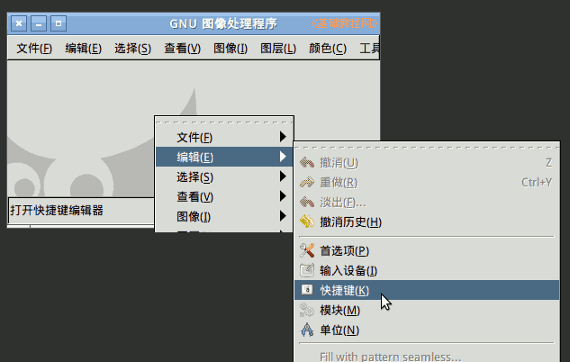
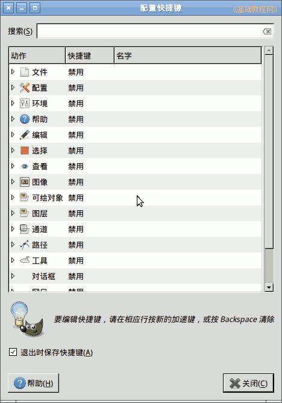
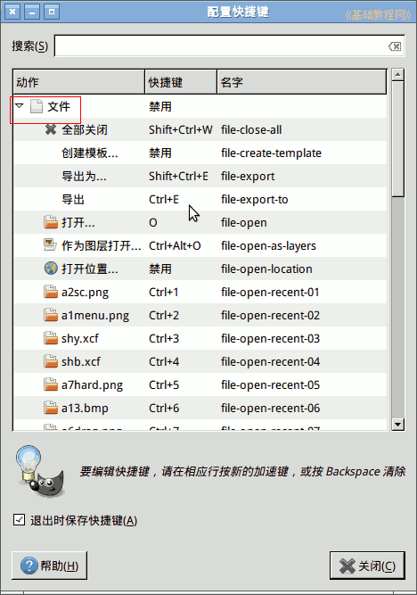
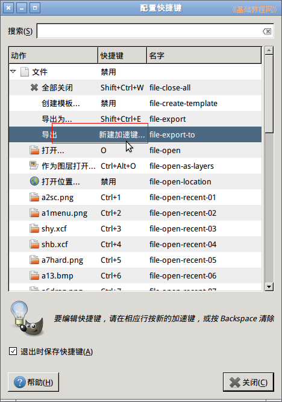
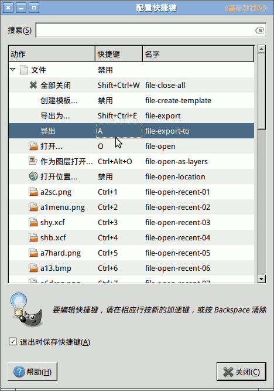
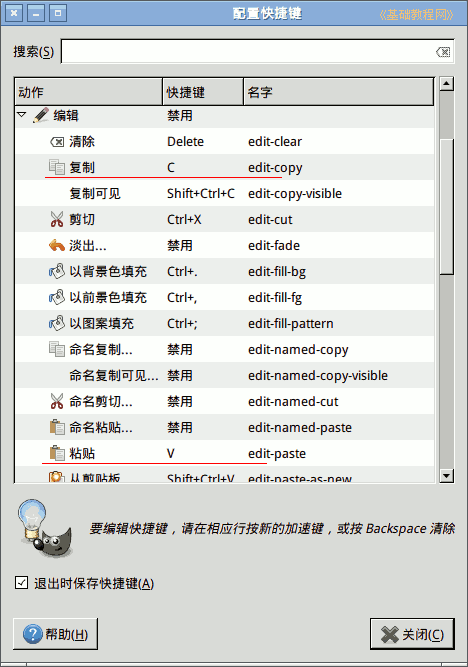
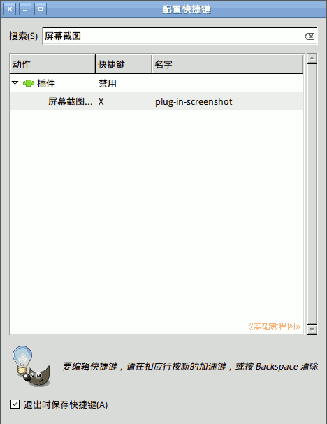
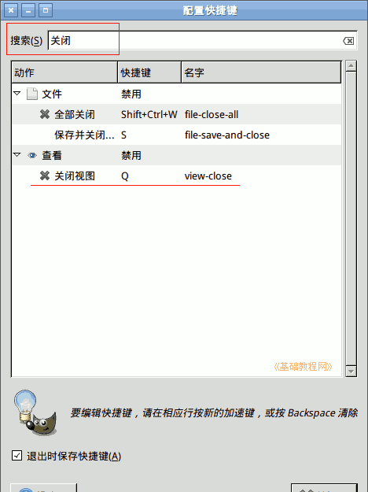

GIMP操作基础教程
作者：Teliute 来源：基础教程网
1、设置快捷键
1）启动gimp，在窗口点右键，依次选择菜单“编辑－快捷键”；

2）这时会显示系统中各个菜单对应的快捷键，点击左边的空三角可以展开菜单命令；

3）点开“文件”菜单，找到导出命令项，对应的快捷键是Ctrl+E；

4）在导出项上点一下，快捷键的位置变成“新建快捷键”，这时就可以输入想更改的按键了；

5）按一下键盘上A，快捷键就改成了A，如果提示已占用，点“重新分配”，就可以更改快捷键；

6）同样展开编辑菜单项，把复制、粘贴、撤销这些常用的都改成一个字母按键；

7）屏幕截图的菜单项在“插件”里，展开插件后耐心往下拉找到后更改；

8）也可以在顶部的搜索栏中，输入要查找的菜单命令，快速找到该项，比如输入“关闭”可以找到关闭视图在查看里；

本节学习了GIMP中的设置快捷键的基本用法，如果你成功地完成了练习，请继续学习；
本教程由86团学校TeliuTe制作|著作权所有
基础教程网：http://teliute.org/
美丽的校园……
转载和引用本站内容，请保留作者和本站链接。
|
|